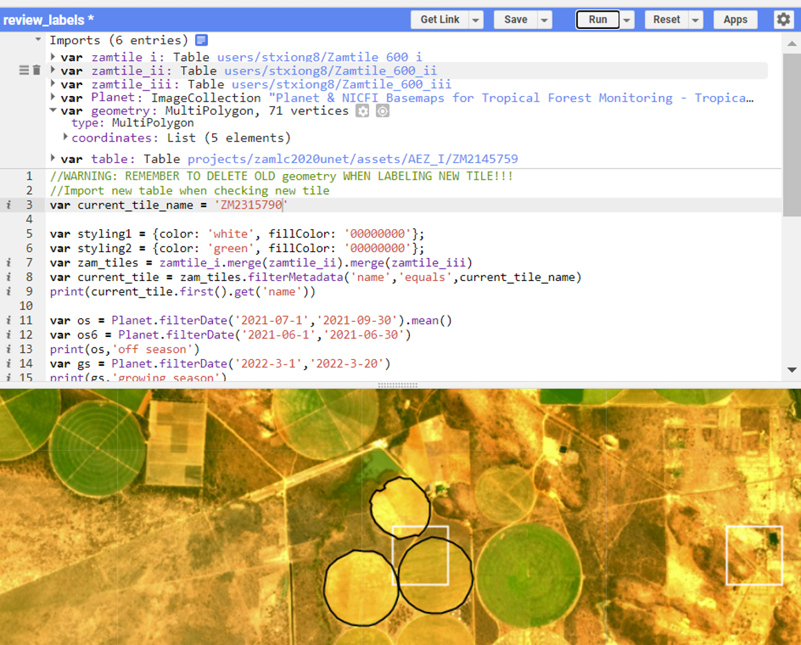
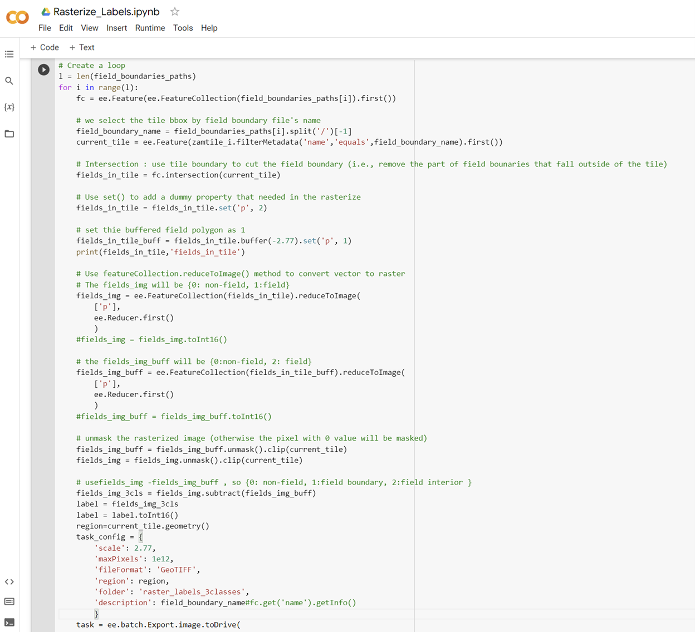
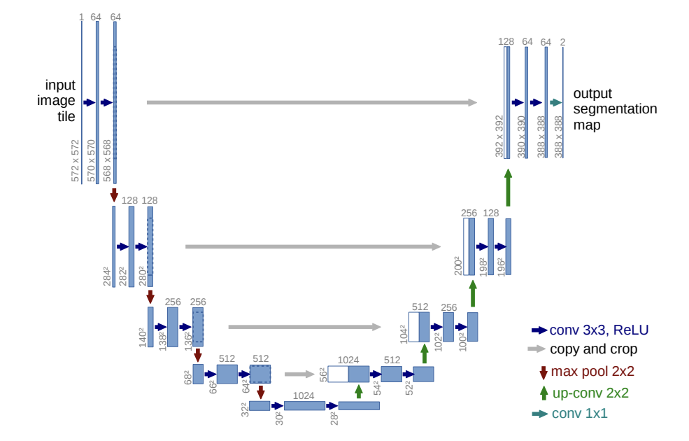

Cropland Maps on Planet-Scope Imagery Using U-Net at National Scales in Zambia
Yao-Ting Yao
Advisor: Lyndon Estes, Sitian Xiong
Master Thesis
Cropland mapping is a crucial tool for evaluating food security. Crop fields in sub-Saharan African countries expect to expand by more than three times in the next decade to satisfy food demand. Developing accurate, large-area cropland maps of Africa’s smallholder agricultural systems is critical.
To address this need, this research use U-Net, a convolutional neural network, to map cropland for the year 2022 in the Republic of Zambia, a country undergoing rapid agricultural growth.
Created a labeling platform and workflow protocol on Google Earth Engine (GEE)
A grid of 200 by 200 was generated to cover the entire region of Zambia. A catalog was created, using R script to randomly seed 600 labels in each agriculture zone. High spatial-resolution satellite imagery grids of the growing and off seasons were obtained from Planet-Scope (with a resolution of 2.77m), along with NDVI imagery. These were utilized to create labels for training and evaluating the model, resulting in 921 labels for Zambia and the 5,377 labels from three other African countries (Kenya, Tanzania, Ghana, and the Republic of Congo).
The Google Earth Engine (GEE) API was utilized to develop a set of automation tools that involved rasterization of labels into three distinct classes, non-field(class_0), field(class_1), and field boundary(class_2). In addition, an imagery downloader and resampler were also created using the same API. Also created check tool to check if files are missing in the folder and needed to be reloaded.
Attention U-Net: model fitting, validation and evaluation
The U-Net architecture is considered one of the advanced frameworks for convolutional neural network (CNN) based image segmentation. This model includes an encoder path and a decoder path with a U-shape construction, which leads to a reduction in the spatial scale after consecutive pooling operations, followed by an increase in the contracting path. To enhance the performance of the model, Attention U-Net was utilized in this research, which actively suppresses activations in irrelevant regions and reduces the number of redundant features, thereby optimizing computational resources. Pytorch and scikit-learn libraries were employed to train the model and make predictions for the results.
Before model training, create the Pickle train and validation dataset. Pickle is a useful Python tool helps to save the model and to minimize lengthy re-train. It saves configs, e.g., data path, label patch size, and side buffer, training transformation type as well. The label size is 200 by 200 with 12 pixel buffer with 0 value and the planet scope imagery is 224 by 224. 80% of the collected labels used for training and 20% for validation.
The dimensions of the label size are 200 by 200, with a 12-pixel buffer that has a value of 0, while the planet scope imagery is 224 by 224. 80% of the accumulated labels are allocated for training purposes, while the remaining 20% are designated for validation purposes. Prior to commencing the training of the model, it is imperative to generate the Pickle train and validation dataset. The Pickle utility in Python is a valuable tool that facilitates the preservation of the model and helps to mitigate the need for extensive retraining. This tool is adept at storing critical configurations such as the data path, label patch size, side buffer, and training transformation type.
For model fitting and evaluating processes, using the model compiler helps to reduce system load and improve performance. Choose nesterov accelerated gradient optimizer to faster weights and biases adjustment processes in a smaller number of epochs comparing with momentum optimization technique. The hyper-parameters used in train, validation and evaluating in this research are as follows:
- Train batch size : 32
- Validation batch size : 2
- Epochs : 300
- Dropout rate: 0.15 (model fitting); 0.1 (prediction)
- Learning rate: 0.01 (using polynomial learning rate decay as learning rate policy)
Prediction: using hyper-parameters to smooth edge effect
The prediction hyper-parameters are as follows:
- Prediction patch size: 250
- Prediction buffer: 179
- Composite buffer: 179
- Prediction batch: 2
- Shrink pixels: 54
- Number of MC trials: 10
The input image is 2358 by 2358 pixels. The patch size of 250 pixels means that the input image is divided into smaller patches of this size. Setting up buffer helps us to work with edge effects. The prediction buffer of 179 pixels is used to ensure that the output image has smooth transitions between neighboring patches. This means that when a patch is processed, the model will also predict an additional buffer of 179 pixels around the edges of the patch. This buffer ensures that the model can capture the context around the edges of the patch and avoids any sharp edges in the output image where the patches are stitched together.
The composite buffer of 179 pixels is used to ensure that the final output image has smooth transitions between all the patches. This means that when the patches are stitched together, an additional buffer of 179 pixels is added around the edges of each patch to ensure that there are no sharp edges or artifacts in the final output image. After ,shrink pixels. As a result, the final prediction dimension is 2000 by 2000.
In the prediction processes, we use model drop out and Monte Carlo dropout (MC) to improve the robustness of the model's predictions. During prediction, dropout is usually turned off. However, according to Sam Khallaghi and Lyndon Estes‘s research, when setting up dropout rate in 0.1, the prediction has better result. The number of MC trials specifies how many times the model should be run with dropout enabled and averaged.